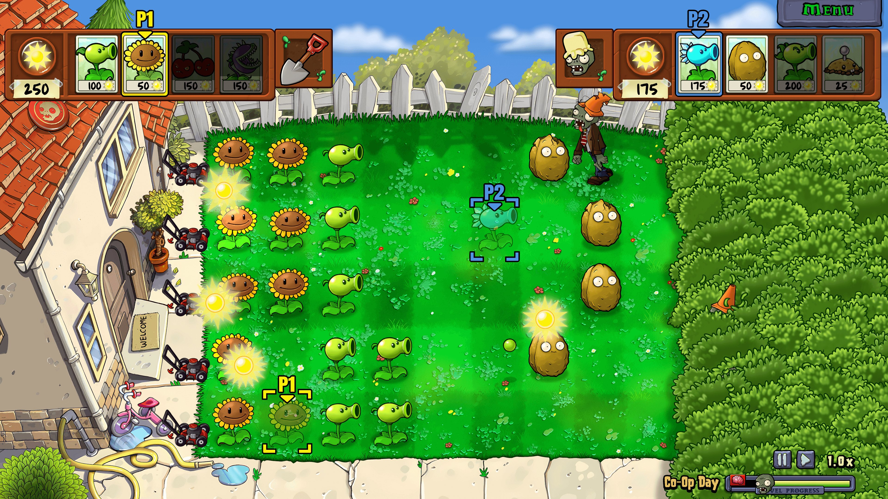

¿QUÉ ES PLANTS VS. ZOMBIES?
Plantas contra Zombies es uno de los video juegos más conocidos del genero de defensa de torres (tower defense) desarrollado original por PopCap Games el 5 de mayo del 2009 y actualmente pertenece a Electronic Arts.
En el juego, una horda de Zombies intenta llegar a la casa del jugador, y la manera de detenerlo es utilizando plantas. Cada tipo de planta y de zombie tienen habilidades diferentes, por lo que el jugador debera de adaptar su estrategia en cada nivel.
¿CÓMO SE JUEGA?
El objetivo principal es impedir que los zombies atraviesen el jardin y deborren el cerebro del jugador. Para defenderse, se colocan estrategicamente plantas en las distintas lineas del jardin.

Para colocar las plantas se necesitan soles. Cada planta necesita de una cantidad distinta de soles, estos pueden generarse naturalmente en los niveles de día o generarse artificialmente utilizando plantas como el Girasol o la Seta Solar. Al inicio de cada día el jugador cuenta con 50 soles para empezar a plantar y al finalizar, el jugador, recibe un nuevo tipo de planta.
En el modo principal del juego, llamado Modo Aventura divido en distintos tipos de niveles con una duración de 10 días cada uno.
PLANTAS VS. ZOMBIES
El jardín está dividido entre dos bandos. Por un lado están las plantas, que defienden la casa utilizando diferentes habilidades. Por otro lado están los zombies, que avanzan por el jardín intentando llegar hasta ella.
Las plantas
Cada planta tiene una función específica. Algunas producen soles, algunas atacan a los zombis y otras funcionan como defensa.
Día:
- Girasol: produce soles para poder plantar otras especies.
- Lanzaguisantes: dispara guisantes contra los zombis.
- Nuez: sirve como barrera para detener a los enemigos.
- Hielaguisantes: ataca y ralentiza a los zombis.
- Patatapum: explota cuando un zombi se acerca.
Los zombies
Los zombies también poseen diferentes características. El zombi normal es relativamente débil, mientras que otros llevan objetos que los protegen o poseen habilidades especiales que dificultan la defensa.
- Zombi: el enemigo básico y más común del juego.
- Zombi Caracono: lleva un cono de tráfico que le proporciona protección adicional.
- Zombie Caracubo: utiliza una cubeta como casco, por lo que puede resistir muchos más ataques.
- Zombi Lector:: avanza protegido por un periódico hasta que este es destruido.
- Zombi saltador de pértiga: puede saltar la primera planta que encuentra utilizando una pértiga.
MÁS INFORMACIÓN
Para conocer más sobre la saga de Plants vs. Zombies, puedes visitar la página oficial de Plants vs. Zombies.